Teach an AI brain to balance a ball in the center of a plate using a custom simulator and sample code.
Total time to complete: 45 minutes
Active time: 25 minutes
Machine training time: 20 minutes
Prerequisites: To complete this tutorial, you must have a Bonsai workspace provisioned on Azure. If you do not have one, follow the the account setup guide.
Imagine you are holding a plate and trying to keep a ball balanced in the center.
How would you do it?
First, you observe the ball:
In observing the ball, you intuitively determine its current location and speed.
Next, you act on the gathered information:
In adjusting the plate angle, you alter its pitch and roll.
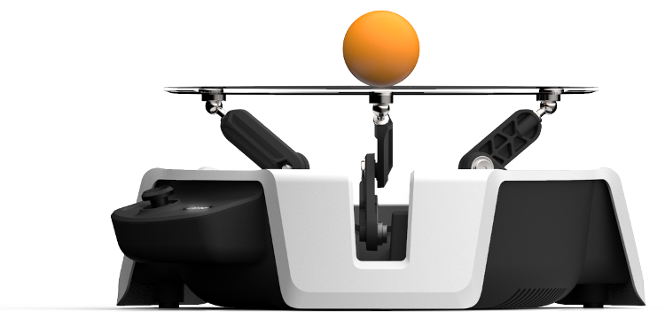
Microsoft Project Moab is a fully integrated system for users of all levels to learn and explore building autonomous intelligent controls using reinforcement learning through Project Bonsai's Machine Teaching platform. The device (shown in the previous image) has three arms powered by servo motors. These arms work in tandem to control the angle of the transparent plate to keep the ball balanced.
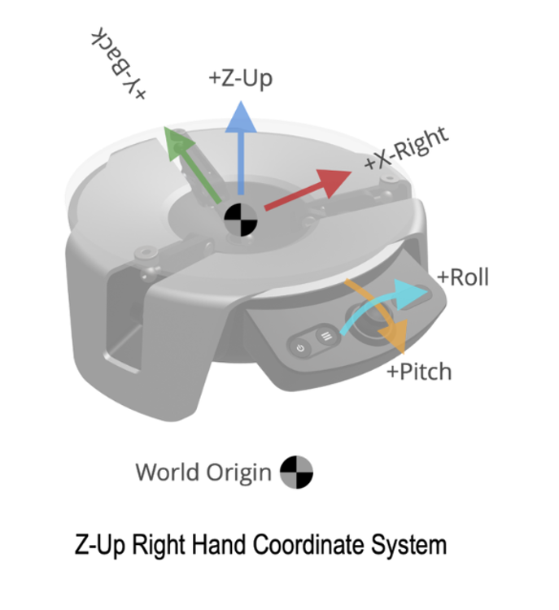The Moab device tracks and maps the the ball movement onto a standard 2D coordinate system. Looking at the front the of the device, the x-axis runs left-to-right, and the y-axis runs front-to-back, with the plate center at location (0, 0), and a radius of r.
The same coordinate system is also used to define the two different tilt angles. Pitch is the plate angle about the x-axis, roll is the plate angle about the y-axis. A perfectly level plate would have pitch and roll of (0, 0).
The trained AI must learn how to adjust the plate pitch and roll to balance a ball using the following objectives:
Now that you have identified the problem and defined the objectives, use machine teaching to train an AI to balance a ball.
To start a new Moab brain:
After creating the Moab sample brain and simulator sample, Bonsai automatically opens the teaching interface, which is prepopulated with everything you need to get started.
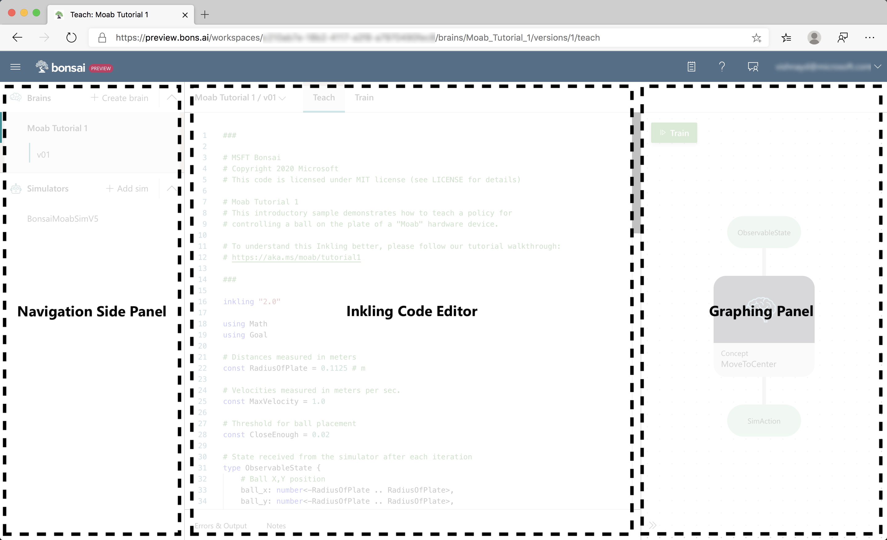The teaching interface has three areas, as in the previous illustration:
SimAction currently defined in the coding panel.Click the ObservableStatenode to jump to the relevant part of your Inkling code, as in the previous illustration.
ObservableState defines what information the brain is sent during every simulation iteration. For your ball balancing problem, the Moab device tracks the ball position and velocity. So, your simulation ObservableState is:
ball_x, ball_y: the (x, y) ball position.ball_vel_x, ball_vel_y: the x and y ball velocity components.# State received from the simulator after each iteration
type ObservableState {
# Ball X,Y position
ball_x: number<-RadiusOfPlate .. RadiusOfPlate>,
ball_y: number<-RadiusOfPlate .. RadiusOfPlate>,
# Ball X,Y velocity
ball_vel_x: number<-MaxVelocity .. MaxVelocity>,
ball_vel_y: number<-MaxVelocity .. MaxVelocity>,
}
Each state has an associated expected range. In the previous code snippet, the ball_x and ball_y locations are bounded by the plate radius. If provided, ranges can reduce AI training time.
Click on the SimAction node to jump to the next part of your Inkling code.
SimAction defines the ways that the brain interacts with the simulated environment. In your simulation, this is reflected by the following variables:
input_pitch: a value that sets the plate angle along the X axis
input_roll: a value that sets the target plate angle along the Y axis
As highlighted before, the Moab device tilts the plate with two orthogonal angles (SimAction). An onboard algorithm translates this action to the three servo-powered arms, achieving the desired tilt.
# Action provided as output by policy and sent as
# input to the simulator
type SimAction {
# Range -1 to 1 is a scaled value that represents
# the full plate rotation range supported by the hardware.
input_pitch: number<-1 .. 1>, # rotate about x-axis
input_roll: number<-1 .. 1>, # rotate about y-axis
}
Click on the MoveToCenterconcept node to define what the AI should learn, as in the following example:
A goal describes what you want the brain to learn using one or more objectives (previously defined), as in the following example:
# Define a concept graph with a single concept
graph (input: ObservableState) {
concept MoveToCenter(input): SimAction {
curriculum {
# The source of training for this concept is a simulator that
# - can be configured for each episode using fields defined in SimConfig,
# - accepts per-iteration actions defined in SimAction, and
# - outputs states with the fields defined in SimState.
source simulator (Action: SimAction, Config: SimConfig): ObservableState {
}
...
A concept defines what the AI needs to learn and the curriculum is how it learns. Your MoveToCenterconcept will receive simulator states and respond with actions.
We previously defined two objectives for our brain:
A goal describes what you want the brain to learn using one or more objectives, as in the following example:
# The training goal has two objectives:
# - don't let the ball fall off the plate
# - drive the ball to the center of the plate
goal (State: ObservableState) {
avoid `Fall Off Plate`:
Math.Hypot(State.ball_x, State.ball_y) in Goal.RangeAbove(RadiusOfPlate * 0.8)
drive `Center Of Plate`:
[State.ball_x, State.ball_y] in Goal.Sphere([0, 0], CloseEnough)
}
As the brain trains, it attempts to simultaneously meet all the defined objectives during each episode.
Available goal objectives include:
avoid: Avoid a defined region.drive: Get to a target as quickly as possible and stay in that place.reach: Get to a target as quickly as possible.For your objectives, use avoid and drive, as follows:
To teach the brain to keep the ball on the plate, use avoid to define an objective called Fall Off Plate, as in the following code snippet:
avoid `Fall Off Plate`:
Math.Hypot(State.ball_x, State.ball_y) in Goal.RangeAbove(RadiusOfPlate * 0.8)
An avoid objective asks the brain to learn to avoid a certain region of states. Your objective states that the ball's distance from the center must not reach values above 80% of the plate radius. This will teach the brain to keep the ball on the plate.
To teach the brain to move the ball to a specific spot and keep it there, use drive to define a objective called Center Of Plate, as in the following code snippet:
drive `Center Of Plate`:
[State.ball_x, State.ball_y] in Goal.Sphere([0, 0], CloseEnough)
A drive objective asks the brain to learn to reach to a target as soon as possible and stay there. In this case, the target is for the ball's X and Y coordinates (state.ball_x and state.ball_y) to stay within CloseEnough radial distance from the plate center.
After defining the brain objectives, Click the Train button to start training and open the Train UI, as seen in the following screenshot:
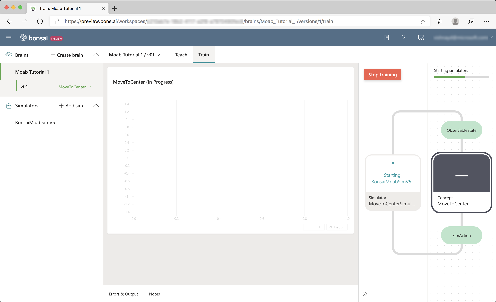When training starts, Bonsai launches multiple Moab simulator instances in the cloud. The training progress is reflected in several UI sections, as seen in the following screenshot:
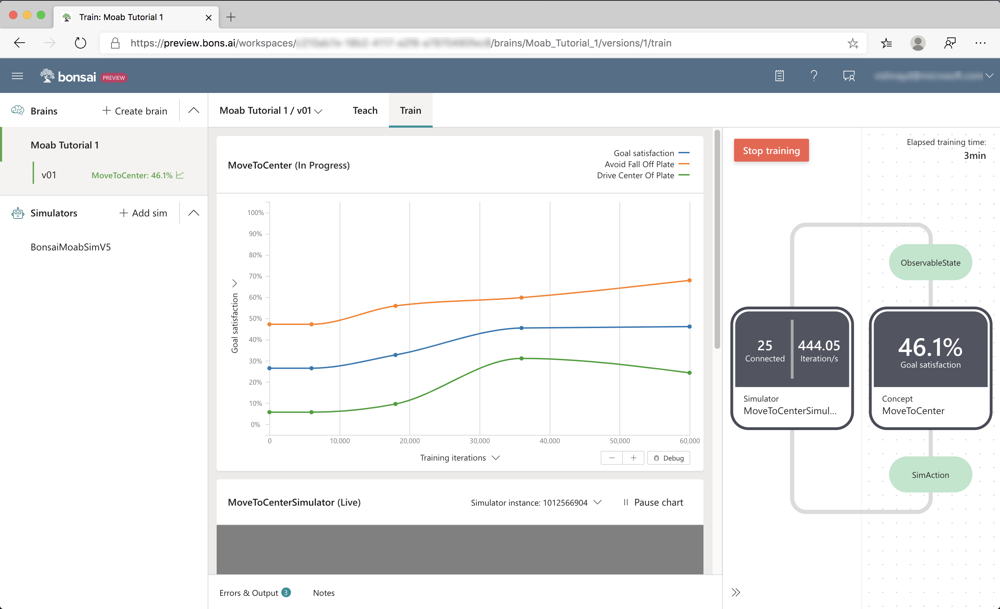Start with the chart at the top of the data panel that displays the performance plot, as seen in the following screenshot:
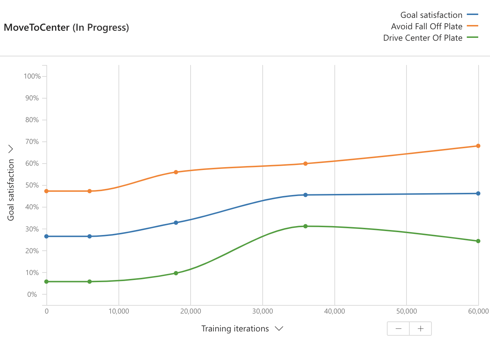This shows the average performance of the brain from test episodes that are regularly run during training. (A test episode evaluates the brain's performance without the exploratory actions used during training to help the brain learn.)
Next, inspect the goal satisfaction plots. Goal satisfaction plots display the brains' achievement progress for each objective. For example, 100% Goal Satisfaction for Fall Off Plate indicates that the brain has learned to consistently keep the ball on the plate. The overall Goal Satisfaction line is the average goal satisfactions across all the objectives. Select several other performance metrics using the Y-axis selector.
As it trains, the brain improves at accomplishing the goals you defined. The goal satisfaction values should eventually reach close to 100%.
The teaching graph has a new Simulator node in the graphing panel, as seen in the following screenshot:
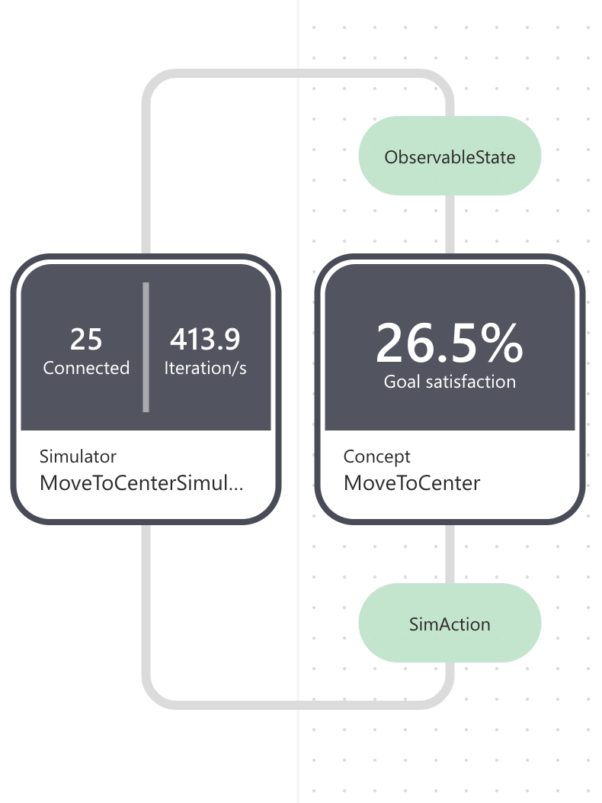The simulator node displays the following:
During training, the concept node displays the latest goal satisfaction.
There is a live visualization of the Moab simulator below the performance plot, as seen in the following screenshot:
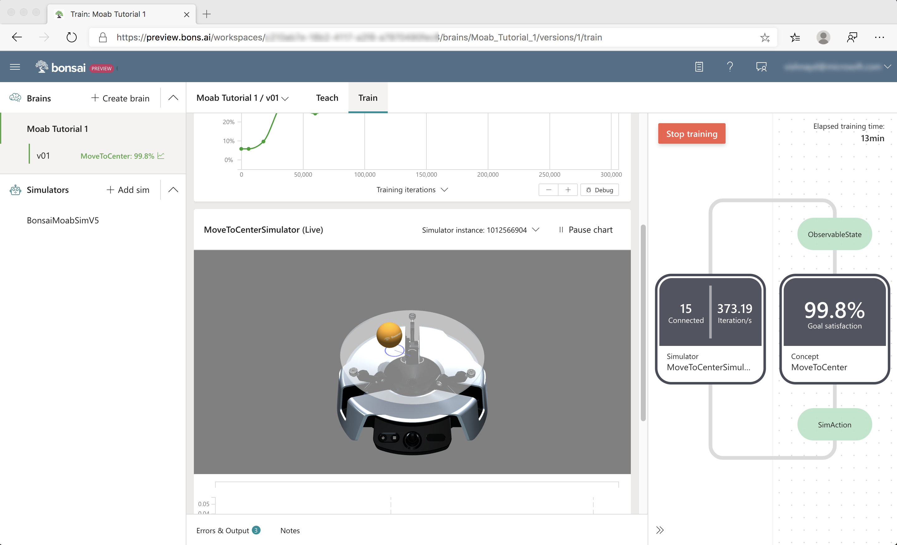In addition to the 3D ball and hardware, the visualization displays the following:
Click and drag to rotate the visualization view angle.
Below the visualization is an interactive graph that plots training values, as seen in the following screenshot:
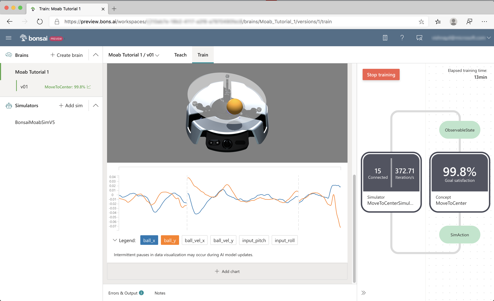Click ball_x and ball_y to display the ball X and Y coordinates. The vertical dashed lines show the stop and start of new episodes.
As the brain learns to keep the ball from falling off the plate, each episode will get longer. As the brain learns to center the ball, ball_x and ball_y will reach zero every episode.
While you wait for the brain to train, try charting other values.
The Goal Satisfaction % trends upwards during the first 100k – 200k iterations. Afterwards, the various performance lines will converge and flatten. After training for an hour or so, you should see a plot similar to the following screenshot:
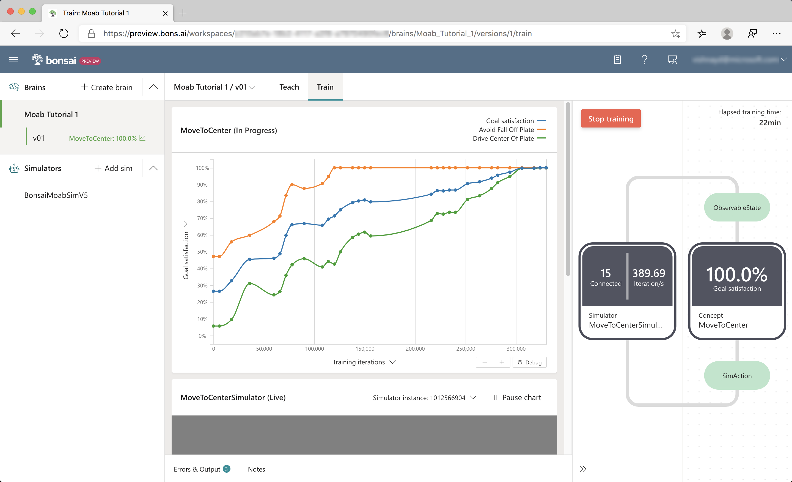Here, performance has reached a peak level and additional training time does not seem to yield any improvement.
Training can be stopped when you notice that the Goal Satisfaction has not made any meaningful progress, which should occur before 500k iterations. Hitting the Train button afterwards will resume training.
Congratulations! You have successfully trained a brain to balance the ball!
Click the Start Assessment button on the Train page, and the following sub-window should appear.
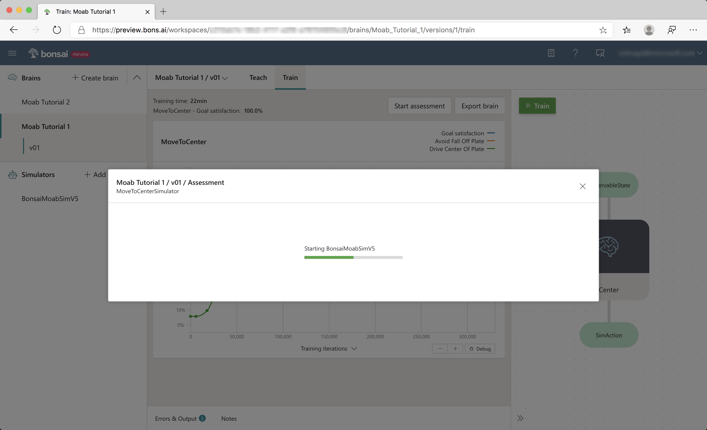After the simulator starts, the visualizer and streaming charts from training are displayed. In assessment mode, the brain is tested using the same random scenarios defined in the Inkling lesson.
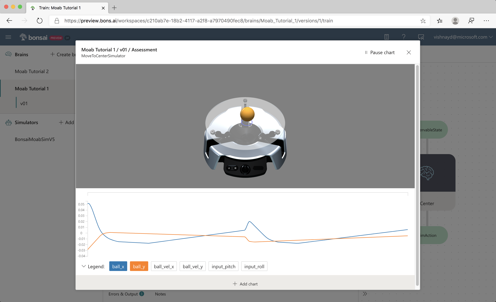Here is a video of a trained brain from this tutorial, deployed on the Moab hardware:
Once Moab kits ship, look here for instructions on deploying the trained brain onto your bot.
Congratulations! You trained a brain that can balance a ball on a plate, and can be deployed on real hardware. In Tutorial 2, you will learn how to use domain randomization to make the deployed brain more robust to differences between simulation and real life.
Discuss this tutorial and ask questions in the Bonsai community forums.
We would appreciate your feedback! Submit feedback and product feature requests.